Copyright © 2008, 2026 Obeo - All rights reserved. This program and the accompanying materials are made available under the terms of the Eclipse Public License v2.0
IS Designer est un studio de conception de systèmes logiciels permettant de capturer le besoin et de décrire l’architecture de systèmes logiciels.
IS Designer est basé sur le studio de modélisation Obeo Designer, qui apporte la notion de projet de modélisation.
L’outillage environnement est le socle commun aux différents types de modeleurs que le studio IS Designer fournit.
Un projet de modélisation IS Designer est constitué de dossiers et de ressources. Les dossiers peuvent contenir des ressources, ou d’autres dossiers.
Les ressources peuvent être classées en trois types :
.aird), qui contient les diagrammes et autres représentations visuelles des modèles sémantiques. Ce modèle ne contient aucune donnée structurelle du système décrit, mais uniquement les mises en forme (couleurs, formes, disposition, etc.) des éléments de modélisation dans différentes représentations visuelles.
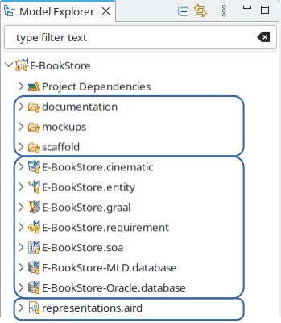
Le projet peut être parcouru suivant deux axes : structure des modèles sémantiques, ou bien types de représentation.
Les ressources sémantiques peuvent être dépliées de manière à laisser apparaître une structure arborescente sur les modèles. Lorsqu’une représentation existe pour un élément de modèle donné, celle-ci est présentée sous l'élément en question. Un double-clic dans le
Model Explorer permet d’ouvrir la représentation.
Même si elles sont présentées sous des éléments du modèle sémantique, les représentations ne sont pas persistées dans le modèle sémantique mais dans la ressource
.aird.
La ressource
.aird peut elle aussi être dépliée pour laisser apparaître la structure des points de vue appliqués au projet. Sous chaque point de vue sont énumérés les types de représentations, et sous chacun des types de représentations les représentations elles-mêmes. Cette vue peut être utile lorsque l’on connaît le type de représentation que l’on souhaite consulter sans savoir sur quel élément sémantique il a été défini.

La fonctionnalité « vue partielle » permet de créer une représentation dont le contenu présenté n’est pas exhaustif.
Par défaut, les différents types de représentation fournis par le studio sont synchronisés avec le contenu du modèle. Ainsi, par exemple, pour un diagramme d’entités qui est créé sur un Namespace, le diagramme présente tout le contenu du Namespace. Ce mode de fonctionnement offre à l’utilisateur la garantie que le contenu des diagrammes est toujours en cohérence avec le contenu du modèle. Les diagrammes synchronisés ont une couleur de fond blanche :

Les vues partielles fournissent un moyen de constituer une représentation dont le contenu n’est pas exhaustif. Lorsqu’elle est créée, une vue partielle est vide, et elle est peuplée par glisser-déposer d’éléments depuis le Model Explorer. Ces vues peuvent être utiles pour se concentrer sur une sous-partie d’un modèle, en particulier pour les gros modèles. Les vues partielles ont une couleur de fond spécifique les distinguant clairement des diagrammes classiques, et alertant sur le caractère non exhaustif du contenu présenté :

Les représentations classiques et les vues partielles peuvent être créées à partir du menu contextuel sur un élément du Model Explorer, dans le sous-menu New Representation. La première partie du menu jusqu'à l’entrée Other... permet de créer des représentations classiques. Les entrées présentées après Other... permettent de créer des vues partielles :
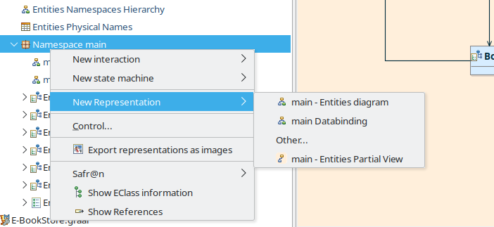
Il est possible de convertir un diagramme synchronisé classique en vue partielle par l’action du menu contextuel Unsynchronized sur le fond du diagramme :
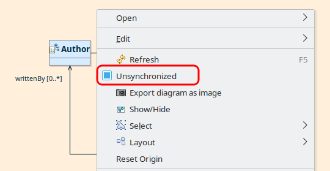
Les vues partielles sont conçues de manière à ne pas permettre une suppression d'élément du modèle de manière accidentelle par une pression sur la touche Suppr. L’outil de suppression est donc désactivé, seul l’outil de suppression du diagramme est activé :

Le raccourci clavier pour la suppression d’un élément du diagramme est
Shift+Ctrl+D.
Les éléments contenus dans une liste ne peuvent pas être supprimés du diagramme, par contre ils peuvent être cachés. Une fois caché, l'élément fait toujours partie du diagramme mais n’est simplement pas visible. Les éléments cachés peuvent être rendus visibles en utilisant le mode Visibility du diagramme. Ils sont alors affichés de manière estompée :
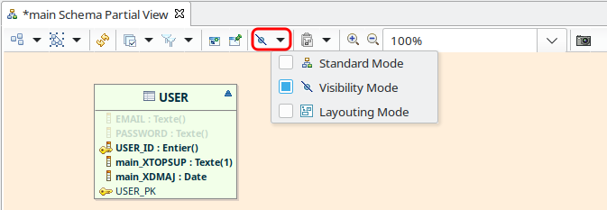
La mise en forme d’un diagramme ou d’une vue partielle peut être reproduite sur une autre représentation en utilisant les actions suivantes :
De manière générale, la gestion des dépendances entre bibliothèques de modélisation doit se faire via la fonctionnalité dédiée, décrite au chapitre ISD – Using modeling projects as libraries.
Bien que cette pratique ne soit pas le mode d’utilisation recommandé, il est néanmoins possible d’utiliser les capacités du socle Eclipse Modeling Framework permettant de créer des liens entre projets.
Pour cela, déclarer la dépendance depuis le projet racine via l’action Add Model du menu contextuel des dépendances du projet :
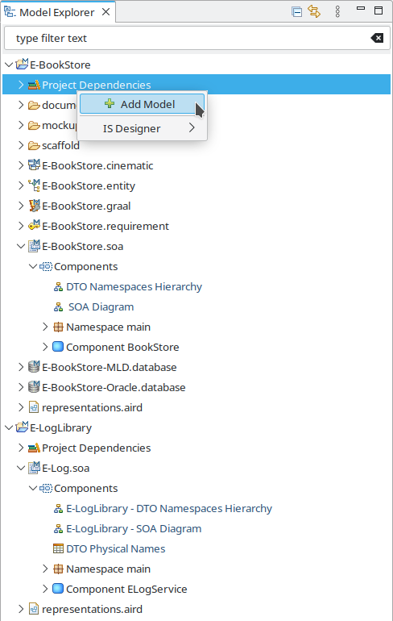
Sélectionner ensuite la ressource de l’espace de travail à lier :
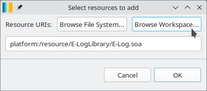
Une fois la dépendance déclarée, les outils de la palette de type Add External Element peuvent être utilisés pour ajouter des éléments du projet en dépendance :
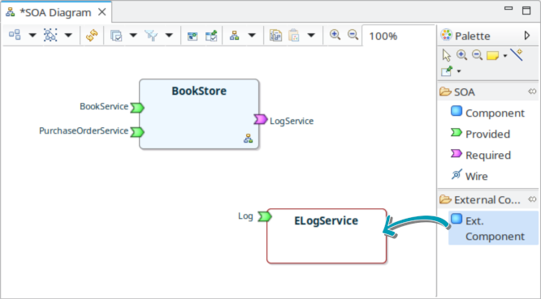
Pour peupler manuellement une vue partielle avec des éléments externes au projet courant par glisser-déposer depuis l’explorateur de modèles, il est nécessaire de sélectionner les éléments sous le nœud Project Dependencies du projet courant :
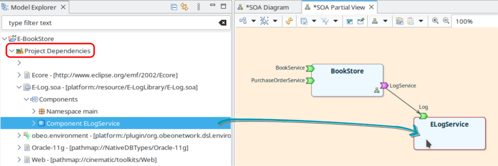
Un glisser-déposer effectué directement depuis le projet lié ne permet pas de peupler le diagramme.
Certaines fonctionnalités du studio peuvent sous certaines conditions signaler à l’utilisateur qu’il peut consulter la vue Error Log pour obtenir plus de détails. Cette vue peut être ouverte via le menu Window > Show View > Error Log.
Exemple de la vue Error Log suite à un traitement d’export Swagger avec messages d’avertissement :

Les modèles
Environment sont principalement utilisés pour définir des bibliothèques de types dans le but de rendre ces types disponibles dans les modèles ISD.
Avant la version ISD 1.9, le modèle
obeo.environment était ajouté par défaut dans les dépendances des projets de modélisation. Depuis la version ISD 1.9, il est possible de choisir les ressources
Environment ajoutées lors de la création d’un projet de modélisation, ainsi que de gérer les ressources
Environment d’un projet.
À la création d’un projet de modélisation, la ressource
obeo.environment est ajoutée par défaut.
Ce comportement repose sur l’utilisation du point d’extension
org.obeonetwork.dsl.environment.providedEnvironmentModel qui permet de définir les modèles
Environment utilisables dans le studio.
Ce point d’extension permet de contribuer des modèles Environment en définissant pour chacun d’eux :
À la création d’un projet de modélisation, seuls les modèles
Environment dont la priorité est la plus élevée sont chargés. La ressource
obeo.environment est contribuée à ce point d’extension avec la priorité 0. (Ainsi, si un autre modèle
Environment est contribué avec la priorité 0, ces deux modèles seront chargés par défaut à la création d’un projet de modélisation).
La boîte de dialogue
Manage Environment permet de gérer les ressources
Environment pour un projet de modélisation donné. Elle est mise à disposition par l’action
Manage environment resources du menu contextuel d’un projet de modélisation, d’une ressource
.aird, ou de l'élément
Project Dependencies :
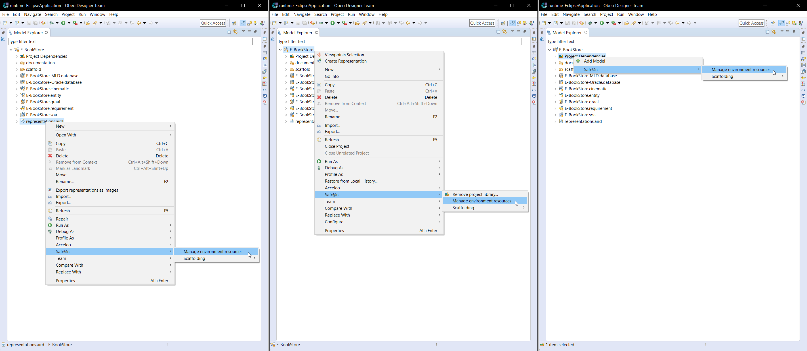
La boîte de dialogue est composée d’un tableau listant toutes les ressources
Environment accessibles pour le projet de modélisation concerné.
Les ressources
Environment se trouvant dans le projet sont automatiquement actives et ne peuvent pas être désactivées. Elles sont présentées en gris.
Les ressources
Environment apportées par point d’extension sont désactivables en décochant la case à cocher en début de ligne. Elles sont présentées en noir.
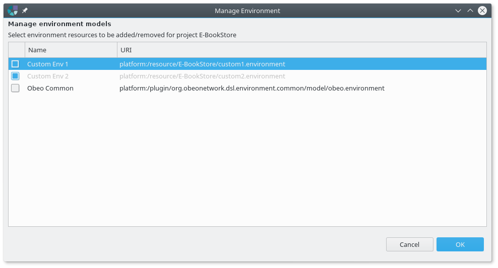
Le résultat de la sélection est appliqué lors de la validation de la boîte de dialogue.
Dans le cas du décochage d’une ressource, une vérification est faite pour s’assurer que les éléments contenus dans la ressource ne sont pas utilisés dans le projet de modélisation. Si certains éléments d’une ressource retirée du projet sont utilisés, un dialogue d’avertissement s’affiche demandant confirmation à l’utilisateur :

Ce dialogue présente sous forme d’arbre les objets qui référencent des éléments de la ressource
Environment sur le point d'être retirée des dépendances du projet (ici obeo.environment). Si ce dialogue est validé, les références listées sont supprimées. Si le message d’avertissement est annulé, la ressource
Environment n’est pas retirée des dépendances du projet.
Il est possible que plusieurs messages d’avertissement se succèdent dans le cas où plusieurs ressources
Environment sont retirées des dépendances du projet.
Remarques :
Ctrl+Z.
Un assistant de création de modèles Environment est accessible via le menu :
File > New > Other... > Environment Model (catégorie IS Designer)
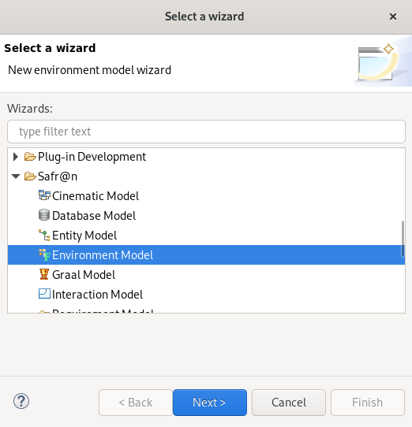
Cet assistant permet de définir :
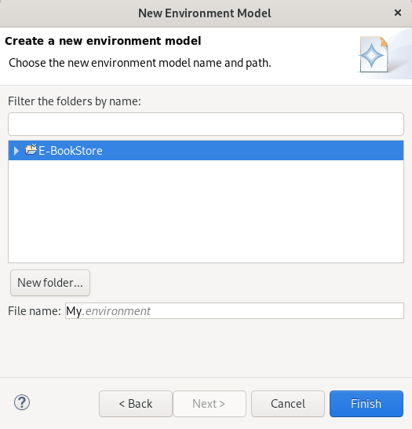
Une fois l’assistant validé, le modèle est créé.
Les modèles de définitions de métadonnées sont utilisés pour proposer à l’utilisateur final des métadonnées prédéfinies lors de la mise à jour des métadonnées d’un élément.
Un exemple d’un tel modèle est accessible via l’URI :
platform:/plugin/org.obeonetwork.dsl.environment.common/model/obeo.metadatadef.
Un modèle
.metadatadef contient un élément racine de type
MetaDataDefinitions contenant plusieurs éléments de type
MetaDataDefinition.
Une
MetaDataDefinition possède trois attributs :
title,
body et
condition.
title et
body sont le titre et le corps.
condition est une expression AQL qui sera évaluée sur un élément acceptant les métadonnées. Si l’expression retourne vrai, alors la
MetaDataDefinition est proposée pour créer une métadonnée sur l'élément, sinon elle n’est pas proposée.
Si la métadonnée (
Annotation) est créée sur l'élément, les attributs
title et
body de celle-ci auront comme valeurs celles de
title et
body de la
MetaDataDefinition.
Exemple : une
MetaDataDefinition avec
title="Modeling studio",
body="This element comes from an ISD modeling workbench" et
condition="aql:true"
pourra être applicable sur tous les éléments qui supportent des métadonnées.
Afin de contribuer un tel modèle, il faut utiliser le point d’extension :
org.obeonetwork.dsl.environment.providedMetaDataDefinitionsModels.
Ce point d’extension permet de contribuer des modèles de définitions de métadonnées en définissant pour chacun d’eux :
platform:/plugin.
Ces modèles sont chargés une seule fois, lorsque l’utilisateur final ouvre la fenêtre de sélection de métadonnées pour la première fois.
Pour utiliser des métadonnées provenant d’un modèle de définitions de métadonnées contribué via le point d’extension, cliquer sur le bouton
... dans l’onglet
Metadatas de la vue
Properties.
Si une définition de métadonnée est applicable pour l’objet contexte, l'
Annotation équivalente s’affiche parmi les
Annotation candidates (colonne
Applicable Metadata) dans la fenêtre qui s’ouvre :

Une définition de métadonnée est applicable sur un objet contexte si :